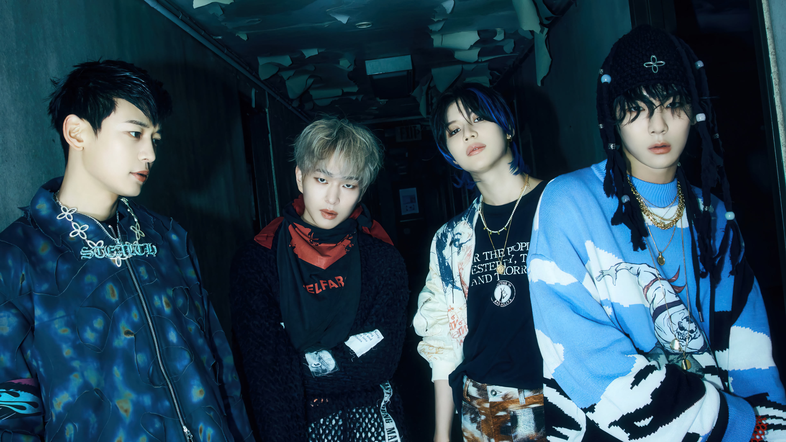

- 
SHINee es una banda de KPop surcoreana formada por SM Entertainment en 2008. Se compone por Onew, Key, Minho y Taemin.
SHINee debutó en mayo de 2008 con su sencillo "Replay" y rápidamente se convirtió en una de las boybands más populares en Corea del Sur y en el extranjero.

Onew, su real es Lee Jin-ki, es el líder vocal de SHINee. Nació el 14 de diciembre de 1989 en Corea del Sur. Además de ser cantante, también ha incursionado en la actuación.

Key, se llama Kim Ki-bum, es el rapero principal de SHINee. Nació el 23 de septiembre de 1991 en Corea del Sur. Es conocido por su estilo único y su versatilidad en la música.

Minho, cuyo nombre real es Choi Min-ho, es el rapero y visual de SHINee. Nació el 9 de diciembre de 1991 en Corea del Sur. Además de su carrera en la música, ha participado en dramas de televisión y películas.

Taemin, su nombre es Lee Tae-min, es el maknae (miembro más joven) y bailarín principal de SHINee. Nació el 18 de julio de 1993 en Corea del Sur. Ha lanzado música como solista y es conocido por sus habilidades de baile excepcionales.

Jonghyun, su nombre real es Kim Jong-hyun, fue el vocalista principal de SHINee. Nació el 8 de abril de 1990 en Corea del Sur. Falleció en diciembre de 2017, pero su legado en la música sigue vivo en la memoria de los fans.

Lanzado en 2008, The Shinee World es el primer álbum de estudio de SHINee. Incluye éxitos como "Replay", "Love Like Oxygen" y "Amigo". Ganó varios premios, incluyendo el Golden Disk Award a la Mejor Debutación. Mejor canción: Replay.
Lanzado en 2010, Lucifer es el segundo álbum de estudio de SHINee. Contiene éxitos como "Lucifer", "Hello" y "Juliette". Ganó el Disk Bonsang en los 25th Golden Disk Awards. Mejor canción: Lucifer.

Lanzado en 2013, Dream Girl es el tercer álbum de estudio de SHINee. Incluye canciones como "Dream Girl", "Why So Serious?" y "Beautiful". Ganó el Disk Bonsang en los 28th Golden Disk Awards. Mejor canción: Dream Girl.
Lanzado en 2015, Odd es el cuarto álbum de estudio de SHINee. Incluye éxitos como "View", "Odd Eye" y "Love Sick". Ganó el Disk Bonsang en los 30th Golden Disk Awards. Mejor canción: View.

Lanzado en 2016, 1 of 1 es el quinto álbum de estudio de SHINee. Contiene canciones como "1 of 1", "Prism" y "Feel Good". Ganó el Disk Bonsang en los 31st Golden Disk Awards. Mejor canción: 1 of 1.
Lanzado en 2018, The Story of Light es el sexto álbum de estudio de SHINee. Consta de tres partes: Episodio 1, Episodio 2 y Episodio 3. Contiene canciones como "Good Evening", "I Want You" y "Our Page".
Lanzado en 2021, Don't Call Me es el séptimo álbum de estudio de SHINee. Contiene canciones como "Don't Call Me", "Marry You" y "Kiss Kiss".